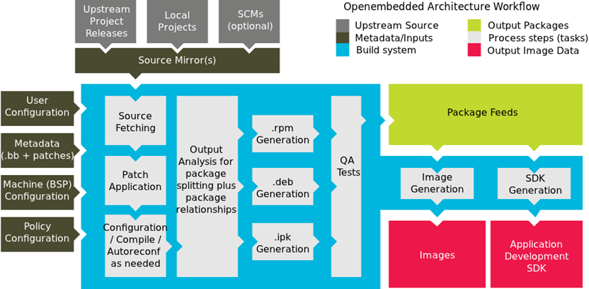
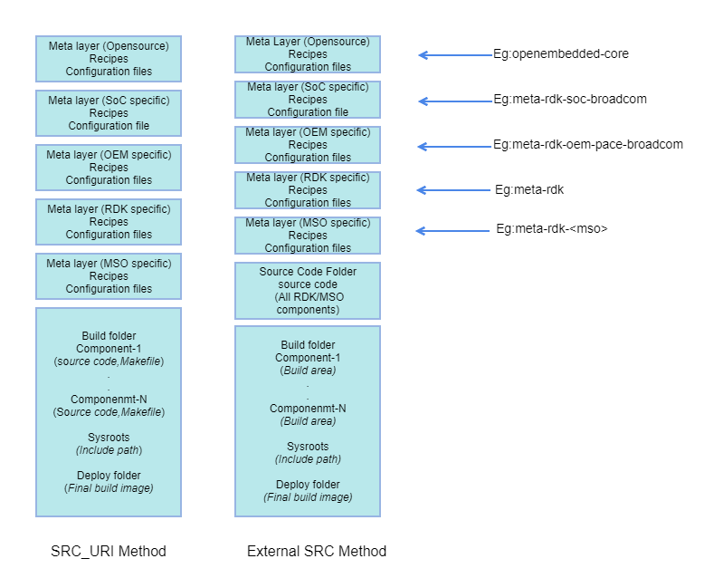

Build System
Yocto Build System Overview
The Yocto Project is an open source collaboration project that provides templates, tools and methods to help create custom Linux-based systems for embedded products. It is an open source project initiated by the Linux Foundation in 2010. The Yocto Project uses the OpenEmbedded build system to construct complete Linux images.
The core components of the Yocto Project are:
- BitBake , the build engine is a task scheduler, like make. It interprets configuration files and recipes (also called metadata) to perform a set of tasks, to download, configure and build specified packages and filesystem images.
- OpenEmbedded-Core , a set of base layers. It is a set of recipes, layers and classes which are shared between all OpenEmbedded based systems. Recipes have a specific syntax and describe how to fetch, configure, compile and package applications and images. Layers are sets of recipes, matching a common purpose. Multiple layers are used within a same distribution, depending on the requirements.
Yocto Architecture

BitBake
BitBake is the task executor and scheduler used by the OpenEmbedded build system to build images. BitBake is a generic task execution engine that allows shell and Python tasks to be run efficiently and in parallel while working within complex inter-task dependency constraints. BitBake stores the output of each task in a directory, the shared state cache. Its location is controlled by the SSTATE_DIR variable. This cache is use to speed up compilation.
Usage:
bitbake [options] [recipename/target ...]
The build/ directory
- conf/ : Configuration files - image specific and layer configuration.
- downloads/ : This folder stores the downloaded upstream tarballs of the packages used in the builds, facilitating fast rebuilds. If the content of this folder is deleted, the builds will go and refetch the source tars again.
- sstate-cache/ : Shared state cache, it is the local prebuilt store used by all builds. It will be populated when you do the builds. It is important to keep this directory safe for sstate reuse.
- tmp/ : Holds all the build.
- tmp/buildstats/ : Build statistics for all packages built (CPU usage, elapsed time, host, timestamps).
- tmp/deploy/ : Final output of the build.
- tmp/deploy/images/ : Contains the complete images built by the OpenEmbedded build system. These images are used to flash the target.
- tmp/work/ : Set of specific work directories, split by architecture. They are used to unpack, configure and build the packages. Contains the patched sources, generated objects and logs.
- tmp/sysroots/ : Shared libraries and headers used to compile packages for the target but also for the host.
Note:
build-
Meta-layers
Meta-layer contains configuration, recipes, classes, patches.
- Configuration (*.conf) files: global definition of variables
- Classes (*.bbclass): encapsulation and inheritance of build logic, packaging etc.
- Recipes (*.bb, *.bbappend): logical units of software/Images to build
Bitbake parses the build classes, config files, and recipes. For every task, a shell script on-the-fly is created and executed.
Recipe
Recipes are essentially a set of instructions for building packages. A recipe describes where you get source code and which patches to apply. Recipes describe dependencies for libraries or for other recipes, and they also contain configuration and compilation options. Recipes contain the logical unit of execution, the software to build, the images to build, and use the .bb file extension.
The recipes are parsed by the BitBake build engine. The format of a recipe file name is
A recipe contains configuration variables: name, license, dependencies, path to retrieve the source code etc. It also contains functions that can be run (fetch, configure, compile. . .), called tasks.
Recipe provides:
- Descriptive information about the package.
- Existing dependencies (both build and runtime dependencies)
- DEPENDS & RDEPENDS variables holds the build & runtime dependencies e.g.
- Where the source code resides and how to fetch it: SRC_URI variable holds the URL path to fetch
- The version of the recipe
- Whether the source code requires any patches, where to find them, and how to apply them
- How to configure and compile the source code
- Where on the target machine to install the package or packages created
Append Files
Files that append build information to a recipe file. Append files are known as BitBake append files and .bbappend files. The OpenEmbedded build system expects every append file to have a corresponding recipe (.bb) file. Furthermore, the append file and corresponding recipe file must use the same root filename. The filenames can differ only in the file type suffix used (e.g. formfactor_0.0.bb and formfactor_0.0.bbappend).
Information in append files overrides the information in the similarly-named recipe file.
Patches
Patches can be applied to recipe files. Patch files should be having extension *.patch. Place the patch file in subdirectory of recipe named (component) folder. The subdirectory should be preferably named as that of component or as ‘files’. Add the below line to the recipe file
SRC_URI += file://filename.patch/
External SRC
By default, the OpenEmbedded build system uses the Build Directory when building source code. The build process involves fetching the source files, unpacking them, and then patching them if necessary before the build takes place.
Yocto place individual components at discrete locations for the build purpose. For example; consider emulator build
../../< Project Folder >/build-qemux86mc/tmp/work/i586-rdk-linux/iarmbus
../../< Project Folder >/build-qemux86mc/tmp/work/qemux86mc-rdk-linux/devicesettings
It will be difficult for a developer to do a code walk through since the entire source code is spread across multiple directories. You might want to build software from source files that are external to and thus outside of the OpenEmbedded build system.For example
../../< Project Folder>/generic
You want the recipe's SRC_URI variable to point to the external directory and use it as is, not copy it. Yocto provides a solution to this by its external SRC support. By this all the components will be pulled to a single place. Say, you are component owner and only focused to modify source code of that component and build it alone. Modify the files under ../../< Project Folder >/generic/iarmbus (as an example; you can modify any component like this)
bitbake iarmbus (as an example; you can build any component like this)
To build from software that comes from an external source, all you need to do is inherit the externalsrc class and then set the EXTERNALSRC variable to point to your external source code.
The statements to put in your local.conf file are illustrated below:
INHERIT += "externalsrc"
EXTERNALSRC_pn-myrecipe = "path-to-your-source-tree"
By default, externalsrc.bbclass builds the source code in a directory separate from the external source directory as specified by EXTERNALSRC. If you need to have the source built in the same directory in which it resides, or some other nominated directory, you can set EXTERNALSRC_BUILD to point to that directory:
EXTERNALSRC_BUILD_pn-myrecipe = "path-to-your-source-tree"
Yocto Build Types
